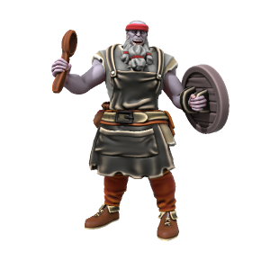
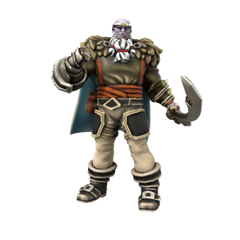

Jondar Platinumfist
A gentle giant with a heart of gold, Jondar (who prefers to go by Johnny Platinum) is the ship's cook and unofficial counsellor. Although his military history and imposing stature make him a capable fighter, what he really brings to the team is experience, compassion and emotional intelligence. Always keen to seek out non-violent solutions, Johnny has defused many a ship's brawl and often acts as a surrogate father figure in the found family that pirate ships often offer.

History
For many years, Johnny served as a privateer with the Bloodswords, captaining The Gilded Shark. He doesn't talk much about this time, but rumour has it he was actually fairly high ranking. Then one day he just... dropped out. He went ashore, stopped talking to anyone from his old life, turned down every contract he was offered, started taking cooking classes and settled into a quiet retirement.

After a few years ashore, he was enjoying a quiet drink after a hard day's chefing, when he overheard a conversation between a young lad and two older thugs. From the sounds of things, they were all serving aboard a pirate ship, and the two thugs represented were pressuring the boy into joining a mutiny, but he was reluctant. Eventually they left him with an ultimatum: "you're with us or against us". Johnny approached the lad and asked to talk to the lead mutineer - somehow, he managed to gain an audience and, after a few minutes along together in a room, had talked the mutineer round to a non-violent solution.
Turns out, the Captain was taking a bigger share of the booty due to the extortionate costs of childcare. She had a child ashore, and was struggling to afford babysitters and rent. With Johnny acting as an impartial facilitator, they came to an agreement: The child would live aboard the ship, and the crew would take turns looking after them. In exchange, the Captain would divide the loot equally - no longer needing a lion's share as she no longer had rent and childcare to worry about. Grateful, the Captain offered Johnny his choice of any role aboard the ship, he chose ship's cook.
He stayed aboard this ship for several years, taking a fairly active role in resolving personal disputes between the crew. Though his official role was as ship's cook, he always saw himself as the unofficial ship's counsellor. One morning, as he was drinking his morning tea on deck, he saw the lad from the pub being scolded by the ship's Bosun. Instead of cowering away or fighting back, the boy used the tools Lil' Johnny had taught him ("When you say ..., it makes me feel ...") to communicate his feelings. The Bosun in turn acknowledged and apologised, the two then worked together to come to a solution. Seeing how well they all handled disputes made Johnny realise that his time here had come to an end, his work was done. He handed in his notice to the Captain and went ashore at next port, ready for his next ship and next adventure.
Relationships
Johnny was once married to Bertha Bloodletter, a fellow Jotun and Bloodsword. The two ended their marriage when Johnny retired from his mercenary life and took up cooking. The two remain on good terms.
How Johnny Met Bertha
The bloodswords are mercenaries, not revolutionaries. They don’t fight for a cause, don’t have a preferred side and don’t have any problem fighting both sides of a war, so long as they get paid twice. Sometimes, a bloodsword is hired to raid a ship protected by… another bloodsword. Generally, not a problem. Part of the job. Comes with the territory. When Jondar had stumbled into this situation in the past, he’d had no trouble dispatching his co-worker. Until….
Winds lashed at sails as The Gilded Shark collided with her prey, her silver prow colliding full force with the side of the poor merchant vessel. Jondar was readying his sailors to board when, without warning, an almighty BOOM sounded. The merchant ship had exploded, sending splintered wood, rocks and cannonballs out in every direction. The Shark took heavy damage, sailors were running here and there with buckets, desperately trying to put out fires, but Jondar was smelling the air. Where are the spices? The air should be thick with the smell of paprika, cinnamon, nutmeg… But all he could smell was gunpowder. This ship didn’t have the goods aboard - it was a set up, rigged to explode. “ABOUT FACE” he bellowed, as out of the smoke and fog he saw it: the real ship. Not much in the way of weaponry, but visibly packed to the rafters with mercenaries, swinging boarding hooks and packing down the powder in their pistols.
Within minutes the ship was upon them. The Shark was in too poor a shape to fend them off with cannon fire; they were boarded. Jondar clenched his fist and prepared for combat. He’d faced worse odds before. But then, out of the smoke, he saw her. Her braided hair flowing behind her, embers singeing her beard, her strong hand gripping a notched great axe. He was awestruck. That’s how she got the first strike; as he stood there gawping she swung for his face. He deflected the blow at the last minute, striking the blade with his gauntlet to send it whooshing over his head. But she was fast as she was strong - before Jondar could draw his cutlass and respond, she’d halted the axe’s arc and brought it back, slamming his unaware face with the hilt. She split his forehead open, blood gushed from his face and covered her. He’d never forget how she looked then; blood splattered on her teeth, smiling as she realised she’d bested one of the most feared captains in the bloodswords. Or so she thought.
Jondar was awestruck, he wasn’t stupid. Before she could bring down the killing blow, he caught her axe in his bare hand, gripping its shaft mid way down. The pain was immense, his arm felt like it was tearing itself apart as he absorbed the full force of the swing, but he’d halted the blade. He gripped tightly and wrought it from her hands, throwing it to one side. She looked at him aghast, clearly she wasn’t used to having her strength matched. Neither was Jondar, truth be told. He‘d not fought like this in years. He drew his cutlass, only to throw it to the ground. He released his grip on his gauntlet, letting it drop to the ground with a thud. He raised his fists. She raised hers. They fought, hand-to-hand, bloody fist to bloody face, until the fighting turned to something else. She grabbed his fist with one hand and tore his shirt off with the other. He pulled her head back by her hair as he buried his face in her breasts.
The fighting around them slowly came to a halt as onlookers noticed that their two captains were… No longer fighting? Both crews were fighting on the orders of the two goliaths now making aggressive, violent love on the deck. Should they… Carry on? Eventually, each crew awkwardly milled back to their own ships. The attacking crew happy to leave having fulfilled their assignment, the crew of the Gilded Shark happy to have gotten away with their lives. Both crews were equally happy to get below deck and leave the captains to it.
Jondar proposed that same day. For the first time. It only took half a dozen more deadly conflicts for Bertha to finally say yes.
🡐 Notable Bloodswords